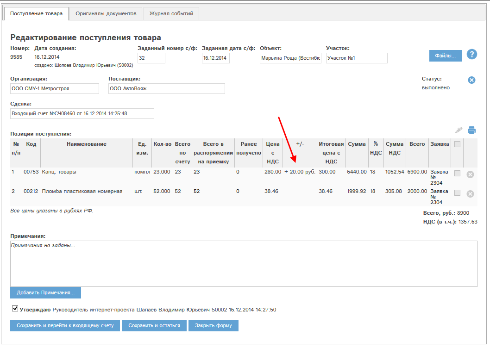

+/- в поступлениях носит информационный характер: Для тех позиций поступлений, которые выписаны по позициям входящих счетов с заданным +/-, в карте поступления также указан +/-:
 Рис. 4.5 Поступление: позиции с +/-.